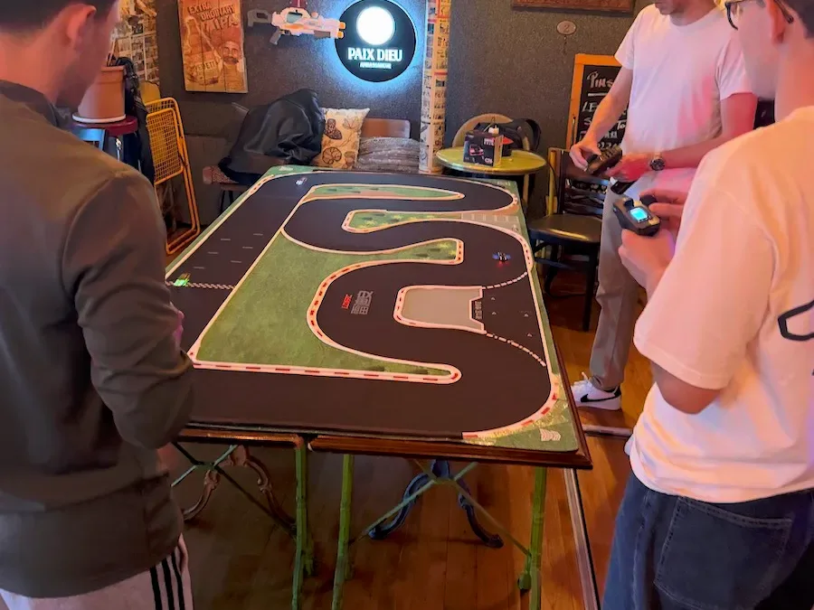
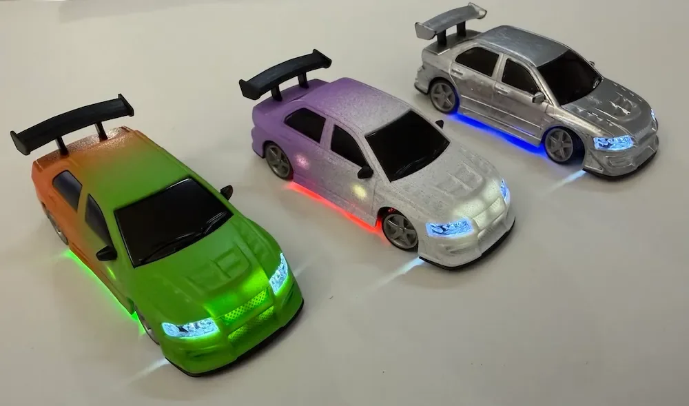
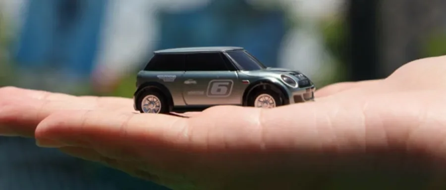
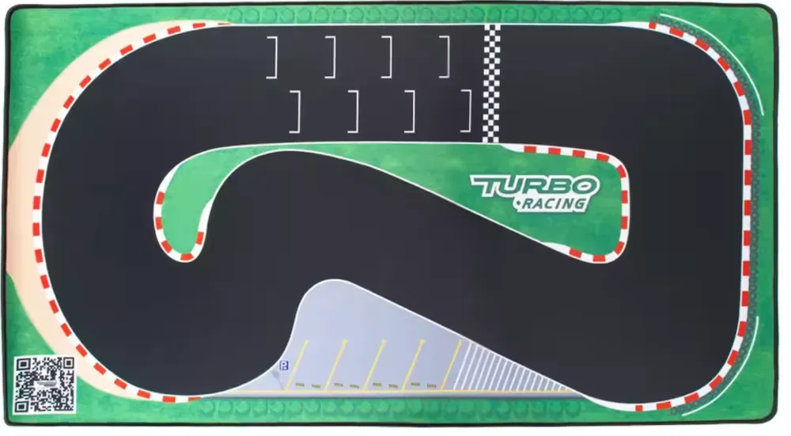

Communauté
Galerie des circuits
Les pistes des pilotes francophones : tapis du commerce, constructions maison, tracés improbables sur une table de cuisine. Envoie les tiennes, elles seront publiées ici avec ton nom.





Emplacement libre
ta piste ici
Envoie une photo et une légende, elle est publiée avec ton nom.
Envoyer une photoEnvie de construire la tienne ?
Circuits et tapis